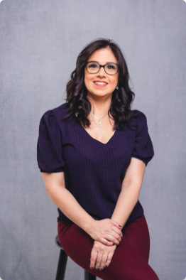

01 / CIÊNCIA
Conhecimento que orienta
Decisões individualizadas, fundamentadas em conhecimento técnico e alinhadas aos objetivos de cuidado.
A alimentação carrega memórias, afetos e escolhas. Na Honravida, nutrição e fonoaudiologia se encontram para cuidar de pessoas com ciência, escuta e sensibilidade.
Comida, ciência
e escuta.
A Honravida integra Nutrição e Fonoaudiologia para apoiar pessoas com dificuldades alimentares, disfagia e risco nutricional, especialmente em momentos de maior vulnerabilidade. Nosso olhar reconhece que alimentar não é apenas oferecer nutrientes: é também promover conforto, autonomia e pertencimento.
Decisões individualizadas, fundamentadas em conhecimento técnico e alinhadas aos objetivos de cuidado.
Diálogo atento com a pessoa, seus familiares e a equipe, reconhecendo medos, desejos e necessidades.
Respeito à biografia alimentar, aos vínculos afetivos e às dimensões culturais do comer.
Nutrição e fonoaudiologia contribuem para decisões proporcionais, seguras e sensíveis às prioridades de cada pessoa.
Avaliação de necessidades, preferências e desconfortos relacionados à alimentação, considerando a fase do adoecimento e os objetivos do cuidado.
Atenção às dificuldades para engolir, às possibilidades de adaptação da alimentação e à comunicação de escolhas e necessidades.
Orientações e conversas sobre a experiência de alimentar, respeitando o contexto familiar e a singularidade de cada trajetória.
Integração entre conforto, segurança, preferências e valores da pessoa, em diálogo com a equipe responsável.
Alterações na alimentação podem trazer sofrimento para a pessoa e para quem cuida. Uma avaliação individualizada pode ajudar a compreender possibilidades, limites e prioridades.
Esses sinais não substituem avaliação clínica. Engasgos importantes ou dificuldade respiratória exigem avaliação urgente.
“O alimento é mais do que somente nutrir o corpo. É acolher emoções, revisitar histórias e fortalecer vínculos.”
Alessandra e Tamyris são as fundadoras da Honravida. Suas experiências unem assistência, educação e participação em iniciativas científicas de cuidados paliativos.

Fonoaudióloga e nutricionista
Fonoaudióloga (CRFa2-10288) e nutricionista (CRN3-31393). Doutora em Ciências pela UNIFESP e mestre em Gerontologia pela UNICAMP. Pós-graduada em Cuidados Paliativos pela Casa do Cuidar.
Coordenadora do Comitê de Fonoaudiologia e integrante do Comitê de Nutrição da ANCP, conforme informações profissionais fornecidas. Docente e tutora em pós-graduação, com experiência em disfagia, risco nutricional e reabilitação paliativa.

Nutricionista
Graduada pela UFBA, com residência multiprofissional em Envelhecimento pela UNIFESP, formação em Cuidados Paliativos pelo Instituto Pallium Latinoamérica e formação como Doula da Morte.
Possui experiência em hospitais, clínicas de transição, instituições de longa permanência e assistência domiciliar. Coordena o Comitê de Nutrição da ANCP, conforme informações profissionais fornecidas.
Referências e conteúdos públicos relacionados à alimentação, nutrição e fonoaudiologia em cuidados paliativos. Os links conduzem aos materiais de suas respectivas instituições.
Cartilha que discute a fragilidade e o cuidado interdisciplinar, incluindo contribuições da Nutrição.
Acessar cartilha ↗Reflexões sobre qualidade de vida, significados da alimentação e atuação da Nutrição nos cuidados paliativos.
Ler entrevista ↗Discussão sobre comunicação, alimentação e relações entre paciente, familiares e equipes de cuidado.
Ler entrevista ↗A presença de links científicos não significa que a Honravida seja responsável pela publicação dos materiais. Direitos e créditos pertencem às respectivas fontes.
Conheça a Honravida e entre em contato pelos canais oficiais para saber mais sobre sua atuação em assistência alimentar em cuidados paliativos.